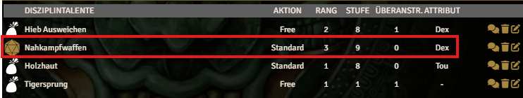
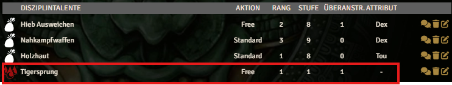
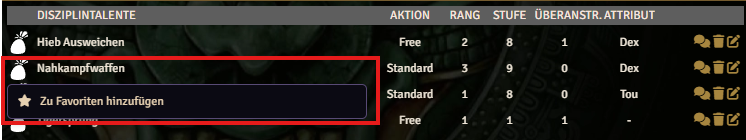

The following section describes the individual functions of the character sheet in detail.
Features in Play Mode
In Play mode, various features are available in multiple places on the character sheet.
+/- Button
The +/- buttons can increase or decrease values in many locations on the character sheet. Clicking edits a persistent effect (Active Effect) that stores all manual changes. Each additional click increases or decreases that effect.
A normal click increases or decreases by 1, and Shift+Click increases or decreases by 5.
Dice Button
Many abilities and items can be used to trigger an action roll. Items that can trigger an action show a die icon instead of the image when you hover over them.

Blood Drop Button
Some abilities do not trigger an action roll but cause strain damage when used. Such abilities show a blood drop icon to trigger the action and apply damage.

Spell Cards
Spell cards provide two functions: attuning a spell and casting the spell itself.
Attuning a spell opens a dedicated dialog where both quick attunement and full attunement can be performed.
Casting also opens a dialog where additional options such as weaving threads or using raw magic can be selected.
Add to Favorites
On the right side of the character sheet, there is a "Favorites" area. Players can add frequently used abilities there. A context menu, opened by right-clicking an item, allows adding the following types to favorites:
- Talents
- Skills
- Devotion Powers
- Spells
- Powers
- Equipment (usable equipment only)

Action Buttons
There are many action buttons that trigger specific actions. Here are some examples:
Favorites
Favorites always trigger an action. Talents, skills, devotion powers, and equipment roll directly. Spells start by asking whether they should be cast through a matrix, a grimoire, or raw.
Legend Point Overview
The legend point overview opens a dialog showing all gained and spent legend points.
Karma Ritual
The karma ritual button is located to the right of the header. Activating it resets current karma points to maximum.
Recovery
The recovery icon (a small bed) next to the header opens a dialog to roll recovery tests or take a long rest.
Initiative
The initiative icon (crossed swords) next to the header rolls the current initiative step.
Knockdown
The knockdown button triggers a manual knockdown test.
Stand Up
The stand-up button triggers a stand-up test.
Take Damage
This button allows manually adding damage outside normal actions.
Add Effect
Temporary and permanent effects include a "+" icon next to the header. Clicking it creates a new effect and adds it to the player character. A dialog opens to configure the effect.
Situational Modifiers
In the "Specials" tab, situational modifiers are shown next to effects. Activating a button adds a temporary effect. Activating it again removes that effect. Active buttons appear darker.
The "Overwhelmed" effect is an exception because it can have multiple levels. Instead of a button, it uses an input field for the level.
Equipment Status
All equipment items can have different statuses (for example, "Owned", "Worn", "Equipped", "Off-Hand", "Two-Handed"). Clicking the status icon cycles to the next status.